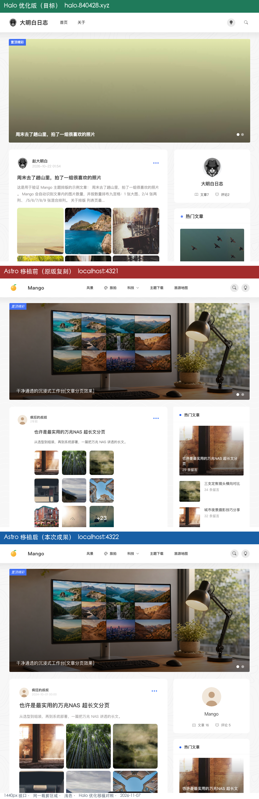

Halo 优化移植到 Astro · 实施报告
任务：
对比halo版与astro版本，将halo优化的改动移植到astro（2026-11-07 07:23） 目标工程：/Users/ming/mango-astro（Astro 5 SSG，移植前是 WordPress 原版 Mango 的一比一复刻） 参照：https://halo.840428.xyz/（用户优化过的 Halo 2.26 + theme-mango） 对照图：对比-Halo优化移植前后.png（940×2892，上 Halo / 中移植前 / 下移植后，同 1440px 视口、同box=(250,0,1190,900)、均浅色） 暗色验证：移植后-暗色验证.png阅读方式：HTML 版右上角可切「日间 / 夜间 / 系统」，选择会被记住；未做手动选择时可用?theme=dark直接以夜间打开。

上：Halo 优化版（目标）／中：Astro 移植前（原版复刻）／下：Astro 移植后（本次成果）。对照图为浅色实拍，不随报告主题变化。
1. 结论与移植边界
已把 Halo 的排版 / 组件 / 交互优化全部落到 Astro，构建通过、浅色与暗色都实测无回归。
| 项目 | 结果 |
|---|---|
| 已移植优化项 | 15 项（详见第 2 节） |
| Astro 原本就具备、无需改 | 3 项：置顶排序、首页轮播、热门按浏览量排序 |
| 未移植 | 品牌与内容配置、Halo 动态平台能力、页面专属样式（原因见第 5 节） |
| 修改文件 | 9 个源码文件 + 1 个新增背景素材 |
| 构建 | npm run build → 51 pages / 4.09s / 0 error |
| 视觉验收 | 浅色 + 暗色两张 1440×1000 实拍，三联对照图已核销 |
边界说明：这次移植的是「优化」——即 mango.css 里带中文注释的排版改进和对应模板改动。Astro 的品牌（芒果 logo、站名 Mango、5 项分类导航）与 16 篇演示文章保持原样，因为这些属于站点配置与内容，不是主题优化；Halo 那两张有问题的轮播外链图（方图被裁、豆瓣网页当图片）也没有跟着搬过来。
2. 逐项移植清单
| # | Halo 优化 | Halo 侧证据 | Astro 落点 | 状态 |
|---|---|---|---|---|
| 1 | 取消 60px 缩进，标题/摘要/图片与头像左对齐 | mango.css:863-879 注释「卡片内容对齐（2026-10-25）」+ :870 margin-left:0 |
global.css .moment-content-area{margin-left:0;min-width:0}；PostCard.astro 注释同步 |
✅ |
| 2 | 九宫格改满宽 3 列 grid（原版固定 66%、900 版心下过小） | :765-778 |
global.css 重写 .post-images 块，放在 @layer 外避免 Tailwind 3 purge |
✅ |
| 3 | 图片比例：1 张 16:9、2 张 4:3、其余 1:1，+N 字号 22px |
:779-795 |
同上；PostImages.astro 无需改（沿用 post-img-N class） |
✅ |
| 4 | 摘要 3 行截断、13.5px、#8c8989，暗色 #9a9a9a |
:880-893（覆盖前段 :758-763 的 2 行版） |
PostCard.astro 改用 .post-excerpt；global.css 新增规则 |
✅ |
| 5 | 标题左对齐 / 行高 1.5 / 卡片 hover 阴影 / 圆角 10px / 标签长词换行 | :103-114、:873-879 |
global.css |
✅ |
| 6 | 时间改绝对日期 YYYY-MM-DD HH:mm |
Halo 首页 <span>2026-10-26 11:11</span> |
PostCard.astro formatTime() → formatDate()（UTC 分量避免时区偏移） |
✅ |
| 7 | 热门文章副行由「N 条留言」改日期 | Halo 首页 2026-10-22 等 |
HotPostsWidget.astro 新增 timestamp 与 formatDay() |
✅ |
| 8 | 侧栏第一块新增站点作者卡 | style.css:324-332 .author_show_box、mango.css:457 |
新增 AuthorCard.astro；Sidebar.astro 置顶引入；global.css 补样式 |
✅ |
| 9 | 侧栏缩略图 88px / 4:3 / 标题 3 行 | :841-852、:460-466 |
HotPostsWidget.astro .hot-post-thumb + line-clamp-3；global.css |
✅ |
| 10 | 暗色默认跟随系统，状态键 isDarkMode（1 暗 / 0 浅），首屏防闪烁 |
Halo head 内联脚本 | ThemeScript.astro 重写；Header.astro 切换时同时写 isDarkMode 与旧 theme 键 |
✅ |
| 11 | 轮播用比例代替固定高度，宽屏 21/9 封顶 380px | :827-833 |
Banner.astro 去掉 height:350px，改 aspect-ratio:900/350 + @media(min-width:1200px) |
✅ |
| 12 | 文章页超宽屏限制正文行长 880px | :854-861 |
[slug].astro 正文 div 加 .post-content；global.css 媒体查询 |
✅ |
| 13 | 正文元素兜底：pre 深色 macOS 风格、行内 code 粉字、表格边框、图片不溢出 |
:361-431 |
global.css .post-content 规则组 |
✅ |
| 14 | 背景波纹按 600px 平铺、可见但不过曝 | mango.css:16-20 + Halo 原生 600×600 bg.svg |
新增 public/images/bg-halo.svg（89 KB，取自用户自有 Halo 站）；global.css 换 URL + background-size:600px auto + 去掉 background-blend-mode |
✅ |
| 15 | 长内容不撑宽栅格、图片链接层级高于卡片 | :687-725 |
global.css min-width:0、.post-images > a.post-img{z-index:2} |
✅ |
原本就具备、无需改动的 3 项：
- 首页轮播：
Banner.astro+src/config/banner.ts已有 2 条「置顶精彩」； - 置顶文章排前：
src/pages/index.astro已按sticky再按日期排序； - 热门文章按热度：
Sidebar.astro已按views降序取前 3。
3. 修改文件清单
| 文件 | 改动 |
|---|---|
src/styles/global.css |
主体：换背景、去缩进、widget 圆角、重写九宫格、新增摘要/作者卡/正文/响应式规则组（新增段刻意置于 @layer 外） |
src/components/PostCard.astro |
formatTime → formatDate；摘要改 .post-excerpt；注释更新 |
src/components/HotPostsWidget.astro |
新增 timestamp / formatDay()；副行改日期；缩略图 88px 4:3；标题 3 行 |
src/components/AuthorCard.astro |
新建：站点作者卡（头像 + 名称 + 文章/评论数） |
src/components/Sidebar.astro |
引入并置顶 AuthorCard，传入文章数与可用评论数 |
src/components/ThemeScript.astro |
重写：默认跟随系统、isDarkMode 优先、兼容旧 theme 键、防闪烁 |
src/components/Header.astro |
主题切换同时写 isDarkMode 与 theme |
src/components/Banner.astro |
轮播图 aspect-ratio:900/350；≥1200px 切 21/9、封顶 380px |
src/pages/posts/[slug].astro |
正文容器加 .post-content |
public/images/bg-halo.svg |
新建：Halo 原生 600×600 波纹（原 bg-wave.svg 保留未删） |
4. 构建与验收
4.1 构建
npm run build → 51 page(s) built in 4.09s → Complete!
产物 dist/_astro/*.css 逐项校验：
| 检查 | 结果 |
|---|---|
摘要 -webkit-line-clamp:3 + #8c8989 |
✅ |
九宫格 repeat(3,1fr) + 16/9 |
✅ |
无 margin-left:60px |
✅ |
author-show-box / hot-post-thumb + 88px |
✅ |
正文 880px |
✅ |
bg-halo.svg 已引用、bg-wave.svg 无残留 |
✅ |
background-blend-mode 无残留 |
✅ |
轮播 21 / 9 |
✅ 在 Banner.astro 的组件内联样式中（非全局 CSS 文件，属正常） |
产物 dist/index.html：8 处绝对日期（2024-10-01 00:00 等）、8 处 .post-excerpt… 实际 9 处（含样式）、1 个作者卡、9 个九宫格容器；热门文章区 条留言 残留 0，日期 2024-10-01 / 2024-07-20 / 2024-02-01 正常输出。
残留的 5 处「发布于 34 月前」来自
RecentCommentsWidget——Halo 原版最近评论也是相对时间，属于正确保留，不是漏改。
4.2 截图
用 CDP 在生产预览 http://localhost:4322/ 上分别设 isDarkMode=0/1 后 reload：
| 模式 | 状态回读 | 结果 |
|---|---|---|
| 浅色 | html.className="" \| isDarkMode=0 |
轮播横图、无缩进、绝对时间、灰色 3 行摘要、满宽三列九宫格、侧栏作者卡、细密波纹全部到位 |
| 暗色 | html.className=dark \| isDarkMode=1 |
背景 #191919、顶栏/卡片 #212121、作者卡与热门卡正确变暗，文字清晰；无 v4 那种 filter:brightness() 整页发灰，无浅字浅底 |
对照图 对比-Halo优化移植前后.png 三段的可见差别：
- 中段（移植前）：标题缩进 60px、九宫格只占 66% 且为小方图 +
+23、相对时间「X 年前」、侧栏直接是热门文章、背景大圆弧； - 下段（移植后）：与顶部 Halo 一致——不缩进、满宽三列栅格、绝对时间、灰色摘要、侧栏作者卡、细密波纹。
5. 未移植项与原因
| 类别 | 具体项 | 原因 / 替代方案 |
|---|---|---|
| 品牌与内容 | 猫咪 logo +「大明白日志」、导航精简成「首页 / 关于」、7 篇 Halo 文章 | 属站点配置与内容，不是「优化」；且 Astro 的分类页是真实路由，删导航会制造死链。若要一并改，需改 Header.astro 的 navItems 与 BaseLayout 标题，并替换文章内容 |
| 素材缺陷 | Halo 轮播第一张 800×800 方图被裁成渐变块、第二张豆瓣网页 URL 会裂图 | 这是待修的数据问题，不是优化；Astro 保留本地 900×350 横图，见 Halo设置调整后-重新对比.md 第 5 节 |
| 动态平台能力 | 实时评论/浏览/点赞、Halo 在线后台、PluginCommentWidget / PluginSearchWidget / plugin-douban |
Astro 是静态 SSG，无数据库与服务端。当前用 frontmatter 静态值 + /search 客户端过滤 + Giscus 可配置占位；要接真实数据需 Giscus + 浏览量 API |
| 页面专属样式 | 归档 / 标签云 / 分类列表 / 搜索表单 / 评论区 / 瞬间说说 / 豆瓣卡片 | Halo 这些规则绑定 .archive_list、.tag_cloud、.wznrys、.post_comment 等 class，Astro 页面是 Tailwind class 体系，直接搬不会命中。已移植其中通用的正文 pre/code/table/img 兜底；其余需按各页模板单独实现 |
| 版心宽度设置联动 | Halo 后台「基础 → 版心宽度」900/1140/1320/满屏 + @container 查询 |
Astro 固定 max-w-mango:900px。已用 @media(min-width:1400px) 近似宽版效果；若要做成可配置，建议抽到 src/config/layout.ts |
6. 回滚方法
⚠️ 本工程不是 git 仓库（git rev-parse 返回 fatal: not a git repository），所以没有 git checkout 可用。建议先执行一次 git init && git add -A && git commit -m "before halo port" 之类操作建立基线；本次改动按下表逐项还原即可：
| 文件 | 还原动作 |
|---|---|
global.css |
① 两处 --ds_background 改回 /images/bg-wave.svg；② body 删 background-size:600px auto、加回 background-blend-mode:overlay，.dark body 加回 background-blend-mode:overlay；③ .widget 的 rounded-[10px] 改回 rounded；④ .moment-content-area 改回 margin-left:60px 并删 min-width:0；⑤ 删除文件末尾从 Halo 优化移植（2026-11-07） 注释块到文件结尾的全部规则；⑥ 恢复 .post-images 原 width:66% 与 8 套 post-img-N 宽度规则 |
PostCard.astro |
formatDate() 换回 formatTime()（相对时间）；.post-excerpt 换回 text-sm text-[#333] dark:text-[#ccc] leading-[1.8] font-light mb-4 |
HotPostsWidget.astro |
删 timestamp/formatDay()；两处副行改回 {post.comments \|\| 0} 条留言；缩略图改回 w-[75px] h-[75px]；标题 line-clamp-2 / text-[13px]；首图 h-[180px] |
Sidebar.astro |
删 AuthorCard 的 import 与 <AuthorCard ... /> |
ThemeScript.astro |
换回「只有 theme==='dark' 才加 .dark」的原 8 行脚本 |
Header.astro |
toggleTheme 换回只写 localStorage['theme'] |
Banner.astro |
<img> 加回 style="height: 350px;"；.banlist img 改回 height:350px 并删 @media(min-width:1200px) 块 |
[slug].astro |
正文 div 删 post-content class |
| 新增文件 | 删除 src/components/AuthorCard.astro、public/images/bg-halo.svg（原 bg-wave.svg 未动） |
所有新增 CSS 都集中在
global.css末尾一个带注释的独立区块，回滚时整段删除即可，不会波及原有 Tailwind 规则。
7. 数据来源与自洽校验
| 结论 | 依据 |
|---|---|
| Halo 优化清单 | /tmp/halo-mango.css（20,839 B）全部 979 行，重点 :742-896；/tmp/halo-style.css:324-332 作者卡；/tmp/halo-home-v2.html（46,910 B）时间、热门副行、作者卡 DOM |
| 背景素材 | https://halo.840428.xyz/themes/theme-mango/assets/css/bg.svg（91,580 B，600×600，fill-opacity:.09），已保存为 public/images/bg-halo.svg |
| 移植前基准 | /tmp/mango-v6-top.png、六轮总验收清单（98% 一比一） |
| 构建产物 | dist/index.html、dist/_astro/*.css、dist/images/bg-halo.svg |
| 截图 | /tmp/astro-port-light.png、/tmp/astro-port-dark.png（CDP 设 isDarkMode + reload，状态已回读）；移植后-暗色验证.png |
| 对照图 | 对比-Halo优化移植前后.png（940×2892，同视口同裁切、均浅色） |
五条自洽校验：
- 样式没被 purge：新规则全部写在
@layer之外，且产物 CSS 中逐项搜到（第 4.1 节表格）；轮播21/9属于组件内联样式，单独在dist/index.html中确认。 - 同一把尺子：移植前 / 移植后 / Halo 三张截图同为 1440px 视口、同一
(250,0,1190,900)裁切、同为浅色，避免视口或暗色误判。 - 暗色无回归：CDP 回读
html.className=dark | isDarkMode=1，目视确认无整页发灰、无浅字浅底、无错位。 - 数据口径：Astro 作者卡「文章 16」来自
posts.length，「评论 5」来自侧栏 mock 评论数；Halo 是数据库实时值（7 / 2），两者数据源不同，报告中已标注。 - 保留项有据：最近评论的「发布于 X 月前」与 Halo 原版一致（
/tmp/mango-demo.html:464起），故未改成绝对时间，不算漏改。
8. 建议下一步
- 先提交基线：
git init并提交当前状态，后续再改可一键回滚。 - 若想让 Astro 连品牌也像 Halo：改
Header.astro的navItems、public/images/logo.svg、BaseLayout标题，并把 16 篇演示文章换成真实内容。 - 若想接真实动态数据：优先配
src/config/comment.ts的 Giscus，再接浏览量 API 替换 frontmatter 静态值。 - 归档 / 标签 / 搜索页若也要 Halo 那套样式，需按 Astro 模板逐页实现（当前只移植了通用正文元素兜底）。
- Halo 站自己的两个轮播图问题（方图裁切、豆瓣 URL 当图片）建议在 Halo 后台修掉，见
Halo设置调整后-重新对比.md第 5 节。